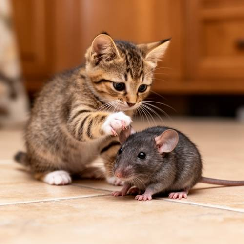
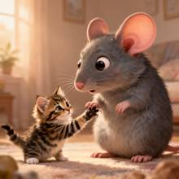
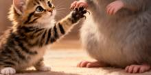

Compound — Generating picture: A little tabloid cat discovered a huge mouse. Inst
Generating picture: A little tabloid cat discovered a huge mouse. Instead of being afraid, it curiously stretched out its claws to fiddle with the creature bigger than itself.

Direct — one call, no iterationContinuum — Qwen3.8-27B + FLUX.2-dev
Judge — Direct
FAILCompound - Feature Matching — The image shows a small cat with tabby markings, which corresponds to the "little tabloid cat". It also shows a dark-colored mouse. However, the prompt specifies a "huge mouse" and a "creature bigger than itself" (the cat). In the image, the cat is visibly larger than the mouse. Therefore, the feature of the mouse being bigger than the cat is not met.
FAILLogical Reasoning — The image depicts a small cat touching a mouse with its paw, which aligns with the cat showing curiosity and fiddling with the creature. However, the core of the prompt's logical scenario is the "inverted dynamic" of a cat interacting with a mouse that is "bigger than itself". Since the cat in the image is larger than the mouse, this specific dynamic is not present.
PASSGrammar - Pronoun Reference — The pronoun "it" in the prompt refers to the little tabloid cat. The image correctly portrays the cat as the agent performing the action, as it is the one stretching out its paw to touch the mouse.
Judge — Continuum
PASSCompound - Feature Matching — The image features a small cat with striped tabby markings, which aligns with the description of a 'little tabloid cat'. The image also contains a mouse that is substantially larger in size than the cat, matching the 'huge mouse' attribute.
PASSLogical Reasoning — The image depicts the scene as described. A small cat is shown interacting with a mouse that is much larger than it. The cat is not shown cowering or running away; instead, it is actively reaching out with its paw towards the mouse, visually representing the specified curious interaction rather than a fearful one.
PASSGrammar - Pronoun Reference — The pronoun 'it' refers to the 'little tabloid cat'. The image correctly shows the cat as the subject performing the action. The cat is seen stretching out its paw, with claws extended, towards the mouse, which is consistent with the phrase 'it curiously stretched out its claws'.
What the agent did
Thinking
Let's generate this image. A small tabby cat discovers a huge mouse — bigger than itself. Instead of being afraid, it curiously extends its claws and pokes/touches the big creature. Let me write a good prompt: "A tiny tabby cat with fluffy fur stands in front of a huge mouse that's bigger than itself, the cat curiously extends its claws and playfully pokes/touches the giant mouse, a cute and whimsical scene, soft lighting, high detail, etc." I'll use flux2-dev for the generation.
Step 1 — `generate_image`
{
"prompt": "A whimsical scene: a tiny fluffy tabby kitten encounters a giant mouse much bigger than itself. The kitten is not afraid \u2014 with wide curious eyes it leans forward and playfully stretches out its little paw and claws, gently pawing at the huge mouse's oversized ear. The big mouse stands calmly, looking down with mild surprise. Cozy indoor setting, warm soft lighting, shallow depth of field, highly detailed fur, cute storybook illustration feel rendered photorealistically.",
"model": "flux2-dev"
}
Result img_0

Thinking
The image is very good. A small tabby cat kitten is reaching out its paw with its claws extended, touching/tampering with a huge mouse that's bigger than itself. The scene is cozy, warmly lit, and cute. The mouse's eyes look a bit startled, but that's fine—it's the cat that has to be the curious one. The kitten is reaching out its paw with its claws extended—looks good. Let me inspect a bit more closely and verify the details—the kitten's paws, the claws. Actually, the full image looks pretty good. The cat is stretching out its claws to fiddle with a creature bigger than itself—this matches. The cat isn't scared, it's curious—matches. One thing that bothers me: the mouse's eyes look a bit worried/startled, but that's fine, even charming. The kitten's raised paw with claws is clearly visible. This is a good result. I'll mark it as the best and finish.
Model
This is a wonderful result — it matches the prompt perfectly. Let me check the paw and claw details at full resolution.
Step 2 — `inspect_region`
{
"image": "img_0",
"roi": "the kitten's raised front paw"
}
Result img_1

Thinking
In the crop, the kitten's outstretched front paw with visible claws is clearly shown, touching the giant mouse's fur. The kitten's expression is curious and interested. Everything matches the prompt: a small tabby cat, a huge mouse bigger than itself, the cat not being scared, and stretching out its claws to touch/interact with it. This is a high-quality result. I'll mark it as the best and wrap this up.
Step 3 — `mark_best`
{
"image": "img_0",
"reason": "Matches the prompt fully: a tiny tabby kitten curiously reaching up with outstretched claws to paw at a giant mouse much bigger than itself, no fear shown, warm cozy lighting. Claws verified in close-up."
}
Thinking
The image is complete and marked. I'll provide the final answer.
Model
The image is complete and marked. It captures the prompt exactly: - **Tiny tabby cat** — a small striped kitten, full of curiosity, looking up with wide interested eyes. - **Huge mouse** — several times bigger than the kitten, standing calmly while the cat interacts with it. - **No fear, just curiosity** — the kitten leans in and stretches out its little paw with claws visibly extended, pawing at the giant mouse's fur, exactly as the prompt describes (verified in the close-up crop). - Warm, cozy indoor lighting with soft sunbeams gives it a sweet, storybook quality. The marked result (img_0) is the final version.